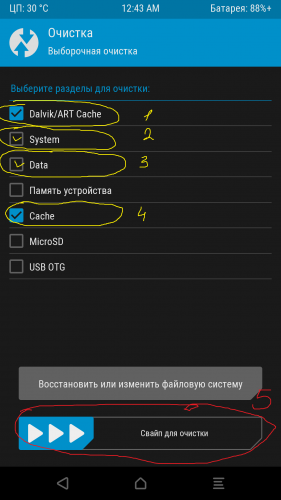
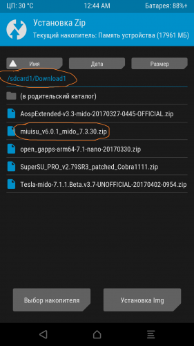
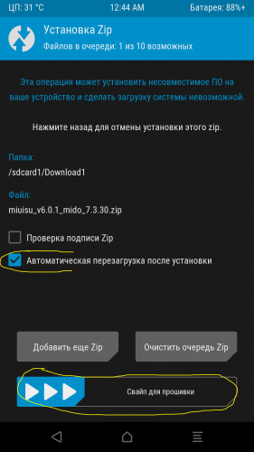
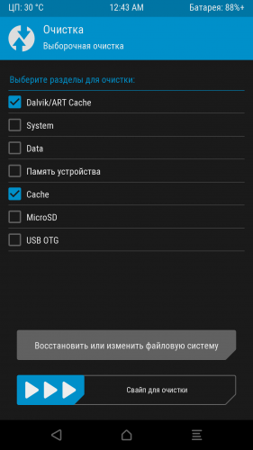
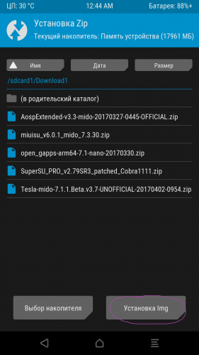

Вайпы
http://4pda.ru/forum/index.php?showtopic=804582&st=1260#entry60081858
|
Уменьшено на 74%  1080 x 1920 (146,38 КБ) |
Тапаем как на скрине галочки 1 по 4 дальше 5( свайп для очистки)
После выбираем папку куда скачали прошивку и тапаем по ней (пример, у меня на sd карте в папке Download1 и в моем случае прошивка miui.su
|
Уменьшено на 74%  1080 x 1920 (154,38 КБ) |
Если хотим еще добавить файлы для "совместного" прошивания (моды , supersu и т.п. то отмечено красным /Добавить еще zip и/или вместожелтым /Свайп для прошивки Теперь ждем пока прошьет и затем Свайп для загрузки систему, либо перед Свайпом для прошивки от жимаем галочку /Автоматическая перезагрузка после установки, в таком случае после прошивания сам перезагрузиться для установки прошивки
|
Уменьшено на 74%  1080 x 1920 (153,82 КБ) |
После этого ждать до появления экрана начальной установки
2) Обновление прошивок через TWRP. Есть два способа "грязный накат" и обновление с вайпами. При грязной просто заходим в папку куда скачана наша прошивка тапаем ее и свайп для прошивки, второй способ перед накатом обновления заходим в Очистку и выбираем как на скрине
|
Уменьшено на 74%  1080 x 1920 (83,5 КБ) |
, после идем в папку где наша прошивка тапаем и если было установлено к примеру supersu Добавляем еще zip и выбираем файл supersu (Делается это потому как при вайпе кеш слетит все что было добавлено модами не вшитые в прошивку)
Таким же образом можем через TWRP отдельно к прошивке можно шить моды, фиксы и т.п.
В случае если вы не сделали бэкап прошивки и благодаря моду, фиксу и т.п. телефон не загружается (зачастую висит на логотипе MI) можно искуственно перезагрузиться в рековери (кнопка питания+громкость плюс, до победного"), сделать вайпы кеш и по новой прошить нашу прошивку, в таком случае в 99% прошивка благополучно загрузиться, избежав тем самым потери данных
Примечание: TWRP умеет шить не только zip архивы но файлы с расширением img. (зачастую ядра, другие TWRP). Для того чтобы прошить файлы с расширением img. находим папку куда она скачана, далее тапаем по
|
Уменьшено на 74%  1080 x 1920 (153,09 КБ) |
и после появится наши файлы с расширением img, выбираем и рековери предложит через что его прошить, соответственно яда через boot, TWRP через recovery